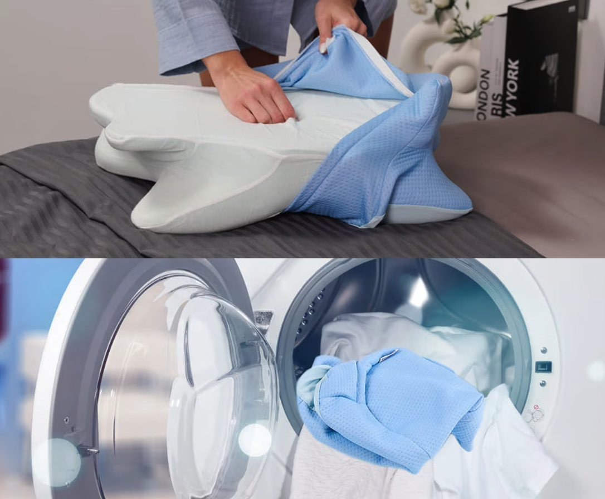

Reader Advertorial — Up to 70% off the contoured pillow in this story, with a 60-night home trial
Eventide ReviewSleep · Wellness · Real Stories
Sleep & Marriage
After 1,317 Nights in the Spare Room, an Odd German-Engineered Pillow Brought Me Back to My Husband’s Bed in Nine Nights
Snore strips, throat sprays, a $520 mouthguard, even a CPAP — nothing helped. What finally quieted my husband’s snoring was a contoured memory-foam pillow I very nearly didn’t bother to try.
CBBy Carolyn Brandt9 min readReader submission
It was a Thursday in the spring of 2022 when I picked up my pillow and walked down the hall. I didn’t slam a single door. I didn’t cry. I just pulled the spare quilt off the closet shelf, made up the bed in the back room, and lay down on sheets that smelled faintly of cedar and old lavender.
It was 3:10 in the morning.
Through the wall, I could still hear it — the sound that had quietly become the soundtrack of my life. A deep, ragged, mechanical snore, the kind that travels through plaster and bed frames and settles into the bones of the woman trying to sleep on the other side.
My husband, Walter, has been the love of my life since I was twenty-four years old. He is a gentle man. A steady father. A patient grandfather. He warms my car on January mornings, he remembers how I take my coffee, and once he drove three hours in sleet to bring back the cardigan I’d left at our daughter’s house.
And for the better part of a decade, his snoring had been slowly unraveling me.
That Thursday was the night I finally admitted I couldn’t keep doing it.
“Just for tonight,” I whispered to myself, pulling the unfamiliar quilt up to my chin.
That “just for tonight” stretched into 1,317 nights.
Three and a half years.
Three and a half years of sleeping alone in the back bedroom of my own house, married to a man I loved, while he slept twenty feet away on the far side of one wall.
My name is Carolyn Brandt. I’m fifty-nine years old. I live in a small town on the coast of Maine, the kind of place where the same six people wave at you from the post office. I’ve been married to Walter for thirty-three years. We have two grown children and a granddaughter named Nora, who is seven and insists I read her exactly three books every Sunday after lunch.
I’m telling you all of this so you understand one thing: I am not a complainer. I don’t fold easily. I raised two children while keeping the books for our school district. I cared for my father through his last two years. I lived through a roof that leaked into the kitchen for an entire winter while we saved up to fix it.
By nature, I am a woman who fixes things.
But Walter’s snoring was the one thing I could not fix.
And what no one warns you about a problem like that — the slow kind, the kind that wears on you night after night, year after year — is that it doesn’t only take your sleep.
It takes your marriage.
Quietly. Politely. While the two of you keep smiling and pretending everything is perfectly fine.
It didn’t begin this way. These things never do.
When Walter and I married in 1993, he was the softest sleeper I’d ever met.
I still remember our honeymoon — a small rented cabin on Mount Desert Island, the floorboards that creaked, the window that looked out at the water — and the first morning I woke before him and simply watched him breathe. Quiet. Even. The kind of breathing that makes you understand why the word peace exists at all.
The snoring crept in somewhere in his late thirties. Faint at first. A low hum. I’d nudge him, he’d turn over, and it would stop. We laughed about it over breakfast.
Then came his forties.
The hum thickened into a growl. The growl roughened into a rasp. By the time he turned fifty, his snoring sounded like an old outboard motor that wouldn’t quite catch.
It stopped being charming. It stopped being something we joked about over toast. It became the thing I dreaded the second the bedside lamp clicked off.
And here is the part nobody prepares you for — the part that sneaks up on you:
I started keeping count.
Counting the broken hours. Counting how many times I had to nudge him in a single night (sometimes six, seven, eight). Counting the headaches that arrived at 3 in the afternoon like a scheduled appointment. Counting the minutes I sat in the parked car outside work, too worn out to walk in.
I was sleeping, at my best guess, somewhere around three to four hours a night.
For years on end.
The exhaustion was the obvious price.
What caught me off guard was the resentment.
It seeped in slowly, like damp under a doorframe. I’d lie there at 1 in the morning, staring at the ceiling, and catch myself thinking thoughts that frightened me.
How can he sleep straight through this?
Doesn’t he care that I’m falling apart?
If he loved me, he’d have fixed it by now.
And then I’d remember — he had tried. He’d tried a great many things. (We’ll come back to that.) None of them had worked.
But at 1 a.m., with my eyes stinging and the headboard rattling, reason does not live in your head.
Resentment lives there instead. And resentment, I’ve learned, is one of the quietest poisons a marriage can carry.
We tried everything. And I do mean everything.
Walter is not a man who ignores a problem. When I finally told him — through tears, somewhere in the third year — how bad it had gotten, he was crushed.
“Why didn’t you say something sooner?” he kept asking.
The truth is, I had. I’d been telling him for years. He simply hadn’t grasped what it was costing me until he found me crying at the kitchen table over a plate of cold eggs.
From that morning, Walter was on a mission.
First, the nasal strips. You know the ones — the little adhesive band you stick across the bridge of your nose. He wore them faithfully for two months. They cut the snoring maybe ten percent for the first hour, and then his nose adjusted and the volume climbed right back. Cost: $39 a month. Result: I started buying earplugs by the box.
Next, the throat sprays. He worked through four brands. One tasted of menthol, one of burnt licorice, one — his words — of “a public pool in August.” Each promised to coat the soft tissue and dampen the vibration. One worked for about a week before it irritated his throat. The rest did nothing whatsoever.
Then the custom mouthguard from the dentist. Fitted to his teeth. $520 out of pocket. The dentist played us animations of how it nudged the lower jaw forward to hold the airway open. Walter wore it six weeks. He despised it — it left his jaw aching, gave him a slight overbite by morning, and had him drooling on the pillowcase like a teething baby.
The snoring dropped a notch. Still loud enough to wake me through earplugs.
Then we saw the ENT. The specialist looked up his nose, peered down his throat, and ordered a sleep study. We drove fifty miles to a clinic where Walter spent a night wired to nineteen separate sensors. The verdict: moderate obstructive sleep apnea. The recommendation: a CPAP machine.
I want to be very clear about what comes next.
If your doctor has prescribed a CPAP, please use it. Sleep apnea is a genuine medical condition with real consequences, and CPAP is the gold-standard treatment for good reason. This is only our story. Walter’s story.
He tried. He honestly did.
For nine nights he wore the mask. The first night he sounded like a scuba diver. The second, the seal slipped and the air hissed out the side and woke us both at 4 a.m. The third, the strap pressed a red line across his cheek that lingered until lunch.
On the ninth night he sat bolt upright at 2 a.m., tore the mask off, dropped it on the floor, and said:
“Carolyn. I can’t do this. I’d rather snore till the day I die than wear this thing one more night.”
He went back. They fitted a different mask — nasal pillows instead of full-face. He lasted five nights before his nostrils were too raw to continue.
The CPAP went into the closet. It’s still in there. (I checked, before I sat down to write this. The box has a thin film of dust on the lid.)
And that was the spring I moved into the back room.
Three and a half years of “healthy compromise”
Here’s the part I wish I’d been honest about much sooner:
For most of those years, I told myself it was fine.
I read the articles online — there are thousands — with bright, reassuring titles like “Why a Sleep Divorce Might Be the Healthiest Choice for Your Marriage.” They always quoted some specialist explaining that rest matters more than tradition, that couples who sleep apart often report happier relationships.
I clung to those articles the way a person overboard clings to anything that floats.
And on the surface, my marriage looked perfectly ordinary. Walter and I had breakfast together every morning. We watched the evening news. We walked after supper. We held hands in the produce aisle like we were still in our twenties.
But something was missing. It took me a long while to name it.
Closeness.
Not only the physical kind — though yes, that faded too — but the small, accumulated closeness of two people sharing one bed.
The way you reach out at 3 a.m. and find a warm shoulder under your hand. The mumbled, half-asleep remark you’d been saving to tell each other. The morning one of you wakes first and watches the other a moment before slipping out to start the coffee.
That’s three decades of tiny moments. And we’d quietly stopped having them.
We had become — to borrow a phrase a counselor once used about another couple — “polite roommates who happen to be married.”
I did not want to be polite roommates with my husband.
I wanted my marriage back.
A neighbor pressed an article into my hands. I almost didn’t read it.
Gail lives two doors down. She’s a retired nurse, sixty-four, blunt in the way that only retired nurses can be.
She’d heard about my situation through the neighborhood — my daughter Allison had mentioned it to Gail’s daughter over coffee, and word travels fast on our street.
One Saturday last November, Gail caught me at the mailbox.
“Carolyn. I’m going to print you something. I want you to read it — actually read it, not just tell me you did.”
I sighed. I’d reached the stage of this saga where every well-meaning tip landed like a small insult. Have you tried propping his head up? Have you tried cutting out dairy? Have you tried sewing a tennis ball into the back of his pajama top?
Yes. We’d done the tennis ball. (It did not work. Walter simply slept on his side and snored at a fresh angle.)
But Gail is a friend. So I said I’d read it.
The article was about cervical alignment and the position of the airway during sleep. It was, honestly, the first thing I’d ever read on the subject that didn’t feel like an ad.
From the article Gail printed for me — how a contoured pillow keeps the cervical spine in line instead of letting the head pitch forward.
The idea was simple, and it made a kind of sense I’d never seen spelled out anywhere.
Most of us, the article said, sleep on pillows that do one job: prop the head up. That’s all. They’re soft. They feel lovely when you flop down. But they’re really just rectangles of stuffing.
The trouble is what becomes of your neck during the seven or eight hours you’re unconscious on top of it.
If the pillow is too tall, your chin is driven toward your chest, which can pinch the airway at the back of the throat — the very spot where snoring is loudest. If it’s too thin, the head tips back and the jaw falls open, which can do the same thing. If it’s the wrong shape for how you sleep, the neck twists in small, sustained ways you don’t notice until you wake up sore.
The article explained that some sleep specialists believe pillow ergonomics can play a real part in how comfortably a person breathes at night — not as a treatment for any diagnosed disorder, but as one factor in how loudly and how often someone snores.
It wasn’t a cure. It wasn’t a miracle. It was one piece of the puzzle that almost no one seemed to be discussing.
And then the article mentioned, almost in passing, a German-engineered contoured pillow built specifically around this idea. It was called SomnaCurve.
I read about it for three hours that night
I’m wary of new products by nature. After everything we’d been through, I’d developed a kind of allergy to anything promising to fix Walter’s snoring. So I did what any reasonable, worn-out, fifty-nine-year-old wife would do: I sat at the kitchen table with my reading glasses and a cold cup of tea, and I read.
I read the manufacturer’s claims. I read the reviews. I read the comments beneath the reviews. I read the fine print. I studied the pillow from every angle I could find.
Here’s what I came away with.
A manufacturer’s demonstration of cervical alignment with the pillow in the back-sleeping position.
What it is
A contoured memory-foam pillow, German-engineered, shaped for cervical alignment.
Foam
Slow-response viscoelastic. It compresses gradually and eases back into shape — the grade of foam used in quality memory-foam mattresses.
Cover
Nylon-elastane blend. Breathable, machine-washable at 86°F, treated to resist dust mites.
Dimensions
21″ wide × 14″ tall — a standard pillow footprint with a contoured profile.
Sleeper position
Built for back, side, and stomach sleepers (most contoured pillows pick one).
Trial period
60 nights at home, full refund if it isn’t for you.
Now — and this matters — SomnaCurve is not a medical device.
It does not claim to treat sleep apnea. It does not claim to cure snoring. In its own materials the company is careful to call it a comfort and posture-support product, not a clinical treatment.
Which, frankly, was part of why I trusted it.
I’ve learned, after years of being oversold by snore-stopper companies, that the products that overpromise are the ones that under-deliver.
One detail is what made up my mind
The detail was this: 60 nights.
SomnaCurve comes with a 60-night home sleep trial. If you don’t love the pillow, you send it back for a full refund.
Sixty nights is a meaningful stretch. It’s long enough that you can’t fool yourself with a placebo. Long enough to tell whether the change is real or imagined. And long enough that the company is essentially saying: we’re confident you’ll keep it.
I’ve come to believe that any product willing to bet sixty nights of comfort against a full refund is a good deal more confident than one that just stamps “satisfaction guaranteed” on the box.
I ordered it.
It was a Tuesday night. The promotion running at the time was 70% off the regular price. I checked my email three times to be sure I’d typed the shipping address correctly.
I didn’t tell Walter.
I’ll be honest: by that point in our marriage, I’d carried home so many failed snore gadgets that he’d developed a tired little smile every time a box turned up on the porch. “Another one, huh?” he’d say, and I’d nod, and we’d both pretend to feel hopeful. I didn’t want that smile this time. I wanted to wait until I knew.
The box arrived four days later.
I opened it in the bedroom while Walter was at the hardware store. The pillow came rolled and vacuum-sealed, the way good memory foam usually does. I cut the plastic and watched it expand in slow motion, taking shape on the bed like something quietly coming awake.
It was firmer than my old pillow. Not hard — firm. The kind of firmness that holds when you press it and slowly fills back in.
The contour along the bottom edge was unmistakable. When I lay down, my neck dropped into the raised section as though it had been waiting for it. I sat up. I lay back on my side. The contour shifted, cradling my neck without shoving my head too high. I rolled onto my stomach — my favorite position for forty years — and the head section was thin enough that my neck didn’t feel bent backward.
Huh. That was the full extent of my thinking. Huh.
I set the new pillow on Walter’s side of the bed, made the bed, closed the door, and went down to start supper. I did not say a word.
What happened over the next nine nights
Night One
Walter spotted the new pillow the second he sat down. “Is this new?” Yes, I said, just try it, please don’t make a fuss. He shrugged, lay back. “Firmer than what I had.” Then, a beat later: “But my neck likes it.” I went to the back room, listened through the wall. The snoring started about twenty minutes after his light went out — but it was different. Quieter. More even. Less of that gasping, sawing edge. I slept until 6, the longest stretch in years.
Nights Two & Three
Same pattern. The snoring was there, but softer than the old version, with stretches of almost silent breathing I could catch when the house was still. I started leaving the back-room door cracked so I could listen. I felt strange about it — like a teenager waiting up for her parents.
Nights Four to Six
Walter noticed before I said anything. On the morning of night five he came into the kitchen, rubbed his eyes, and said: “I don’t know if I’m imagining it. But I think I’m sleeping better.” His neck felt better in the morning. He wasn’t jolting himself awake coughing. He felt — his word — “less foggy.” I didn’t mention I’d been listening through the wall.
Night Seven
I opened the door wider that night. I lay there listening, and at some point realized I was holding my breath. Through the wall I could hear Walter breathing — heavy, deep, but not loud. I stayed awake an hour just listening. And then I cried, very quietly, because I hadn’t heard my husband breathe like that since the late 1990s.
Night Eight
I nearly went back to our room. I stood in the hallway in my robe, pillow under my arm, the same way I’d walked the other direction three and a half years before — and I lost my nerve. What if it’s a fluke? I thought. I went back to the back room. I felt foolish. But I went.
Night Nine
At supper I told Walter, with some difficulty, that I was thinking of coming back to our bed. He set down his fork and looked at me a long time. “Carolyn,” he said, clearing his throat. “I’d like that.” That night I carried my pillow down the hall in the opposite direction and lay down beside my husband for the first time in 1,317 nights. He reached over in the dark and took my hand. Neither of us said a word. I woke at 6:30 having slept seven and a half hours — in my own bed, beside my own husband, for the first time since 2022.
The contour keeps the head in line with the spine instead of letting the chin tip toward the chest — the small detail Walter’s old pillow could never do.
What made the difference, as best I can tell
I’m not a sleep scientist. I’m a retired school bookkeeper from Maine. So please take everything below as one woman’s account of why this seemed to work in her house — not a medical claim.
Side-sleeping position — the lateral edge of the contour cradles the curve of the neck without pushing the head upward.
The contour is the whole point
Most pillows are rectangles. SomnaCurve is shaped — a raised lip along the bottom edge built to support the neck’s natural curve. On his back, it holds Walter’s neck in line with his spine instead of letting his chin tip forward. His old pillow let his head pitch ahead as the night wore on, closing the airway. This one doesn’t.
Works in every position
Walter is a back-and-side sleeper. He flips without meaning to. Most contoured pillows I’d looked at were tuned for one position — usually back sleeping — and turned into a torture rack the moment you rolled. This one is shaped to work on your back, your side, and even your stomach.
Slow-response memory foam
Not the bouncy kind — the slow kind, that compresses gradually under your head and eases back when you move. Cheap foams “remember” the wrong shape and develop a permanent dent within weeks. Slow-response viscoelastic holds up far better.
Breathable, washable cover
The cover is a nylon-elastane blend — light, breathable, machine-washable. Walter sleeps warm, especially in summer, and this one doesn’t trap heat the way some memory foam does. The cover unzips, goes in on cold, hangs to dry at 86°F.
Dust-mite resistant
Walter has mild seasonal allergies. The cover is treated to resist dust mites — a small thing, but a meaningful one when you’re pressing your face into it eight hours a night.
The 60-night trial
Sixty nights. If it doesn’t work, you send it back for a full refund. That’s a real guarantee — and it’s exactly why I felt fine ordering one without telling Walter. If it flopped, I could quietly return it and we’d be no worse off.
A one-time purchase, not a subscription
Unlike nasal strips ($39/month), throat sprays ($25/month), and the various app-based snore trackers with monthly fees, the pillow is bought once. I added up what we’d spent on disposable snore products over the years; the pillow paid for itself in roughly four months — and it’s still on Walter’s side of the bed eight months later.
Stacked SomnaCurve pillows — the slow-response foam keeps its contoured shape under load.
When the head sits in line with the spine instead of tipping forward, the airway stays open through the night — the small thing Walter’s old pillow couldn’t manage.

The cover unzips and goes straight into the washer at 86°F, then hangs to dry — useful when one of you sleeps warm.
How it stacks up against what we’d already paid for
SomnaCurve
Standard pillow
Wedge pillow
Mouthguard
Targets neck alignment
Yes
No
Partly
Jaw only
Multiple sleep positions
Yes
Yes
Back only
Yes
Comfortable all night
Generally
Yes
Restrictive
Often sore jaw
Trial period
60 nights
Varies
Varies
Usually none
Recurring cost
None
None
None
Every 6–12 mo
Comparison reflects general retail experience and Carolyn’s own household; actual pricing and features vary. This is not a substitute for medical advice for any diagnosed sleep disorder.
What other couples have written to tell me
After this piece first went around, the emails started arriving. A great many of them — from wives, from husbands, from the grown children of snorers. Here are a few I asked permission to share.
MDMarcia D.Spokane, WA · age 62
My husband and I had been doing the “sleep divorce” thing for nearly three years. I was embarrassed about it, but I was running on fumes. I bought him this pillow honestly because I’d run clean out of ideas. It wasn’t overnight, but by the second week his snoring was clearly softer and I started staying in our bed more nights than I left it. We’re back to full-time now. Not perfect — but it’s our marriage again.
Verified buyer
GPGerald P.Dayton, OH · age 66
I’m a side sleeper with chronic neck trouble going back to a fender-bender in 2009. I bought the pillow more for the cervical support than the snoring. Honestly, my neck still aches some mornings — it isn’t a miracle — but I’m no longer waking at 4 a.m. because of it. My wife says I’m quieter too. Four stars because nothing’s perfect, but it’s the best pillow I’ve owned.
Verified buyer
BKBrenda K.Omaha, NE · age 57
I’ve bought four anti-snore pillows over the years. Three were dreadful. One was fine for a month, then went flat. This one is firmer than I expected and took me three nights to settle into, but the trial period meant I never felt cornered. Eight weeks in, I’m a believer. My husband notices it most — says he’s waking up less.
Verified buyer
LVLorraine V.Mesa, AZ · age 54
I’m a side sleeper. Every pillow I’ve ever owned eventually compresses overnight and leaves my neck cranked at the wrong angle. This one keeps its shape. I wake without that morning crick I used to live with. I can’t speak to the snoring claim — my husband says I’m quieter but also that I was “already pretty quiet” — but for cervical support, this is the real thing.
Verified buyer
A few things I want to be honest about
If you’ve read this far, you’ve earned the unvarnished version.
Walter still snores some nights. Not every night, but some. When he’s had a glass of wine with dinner. When he ends up on his back instead of his side. When he’s fighting a cold. The pillow did not turn him into a silent sleeper.
What it did was move the snoring from “sleeping beside an outboard motor” to “sleeping beside a man who breathes deeply.” The first is something you cannot live with. The second is something you can.
It also took us about ten days to fully adjust to the firmness. Walter needed a week before he stopped remarking on how different it felt. I needed two before I trusted that the change was real and not a fluke.
And one more thing: Walter’s sleep apnea diagnosis didn’t disappear. A pillow does not cure apnea. He went back to the ENT after three months and they offered him a different style of oral appliance. He’s weighing it. We’re still working on his sleep, the way you keep working at anything that matters.
If you or your partner has apnea or any other diagnosed sleep disorder, please — please — follow your doctor’s advice. A better pillow is no substitute for medical care.
But if you, like us, are exhausted, sleeping in separate rooms, running out of ideas, watching your marriage grow quieter and politer and emptier with each passing year — this is one thing worth trying. Sixty nights, full refund if it doesn’t help, and the downside is small.
It’s late April now. We’ve shared the same bed every night since November.
I’m writing this at the kitchen table. Walter is out back, setting up the trellis for the climbing roses our granddaughter Nora insisted we plant for her birthday. A small thing — but I noticed it this morning when I woke:
The light came in through our bedroom window. Walter was already awake, reading. He glanced over and said, “Morning, beautiful,” the way he used to in the 1990s, before any of this began.
I can’t tell you how much I’d missed that small, ordinary moment. For three and a half years, the first thing I saw each morning was the faded wallpaper of the back room. Now it’s my husband’s face.
I’m not telling you this pillow will save your marriage. I’m not telling you it will cure anything. I’m not telling you that what worked for Walter will work for whoever is sleeping (or not sleeping) beside you tonight.
What I am telling you is that I had given up.
I had truly accepted that the best version of my marriage I’d ever have again was the polite-roommates version. I’d grieved it. I’d moved on, the way you move on from things you believe you cannot change.
And I was wrong.
If you’re lying awake right now on the wrong side of a wall, listening to someone you love — if you’ve already given up — please don’t.
Sometimes the thing that mends it isn’t the thing you’d expect. Sometimes it’s a pillow.
Carolyn B.
Maine · April 2026
Reader Comments47 comments · closed for this issue
DRDiane R.1 day ago
Reading this in bed at 2:14 a.m. with my husband snoring beside me. I’ve been “just for tonighting” the spare room for almost two years now. Carolyn, this is my exact story. I’m ordering one in the morning. Thank you for writing it.
74Reply
CBCarolyn BrandtAuthor1 day ago
Diane — you are not alone. The number of women in your shoes would astonish you. Give it a couple of weeks and let us know how it goes. Sending you rest.
31
MSMike S.2 days ago
I’m the snorer. My wife forwarded me this. I’ll be honest, I felt seen reading the part about Walter — the CPAP I tried twice and couldn’t stand, the dentist’s mouthguard that gave me TMJ, all of it. We ordered the pillow last week. Three nights in. My wife says it’s clearly softer at the “peak” moments. I sleep better too. I’ll report back at 30 days.
58Reply
PGPatty G.3 days ago
Question for anyone who’s tried it — I’m a strict side sleeper and I’ve had three contoured pillows that swore they worked for side sleepers and were awful. Is this one actually different? My neck pain is real and I don’t want to burn another sixty nights.
22Reply
SBSharon B.2 days ago
Patty, side sleeper here, fourteen years of neck pain. The contour is shaped so the side of your face settles into the lower section while the raised edge supports the side of your neck. Took me four nights to fully adjust. Now I genuinely can’t go back. Not a miracle — just better.
40
AMDr. Alan M.Verified4 days ago
Retired family physician here. I want to commend the author for being explicit that this is not a substitute for medical care for diagnosed apnea. That responsibility is exactly right. For mild positional snoring, though, neck alignment from an ergonomic pillow is one of the most under-discussed contributing factors. Worth trying for many patients before more invasive steps — in consultation with their own physician.
96Reply
JWJoan W.5 days ago
The pillow felt steep at first, until I added up what we’ve spent on snore strips, sprays, and that ridiculous $520 mouthguard from our dentist. We’ve been at this six years. I bought it on the 70%-off promo, used the trial, and kept it. Worth every dollar. Wish we’d tried it first.
37Reply
DFDonna F.6 days ago
My husband uses CPAP every night, and I want to add this for anyone in our situation: the pillow has been a gentle complement to his CPAP, not a replacement. He says the mask is easier to wear now because the contour gives the headgear straps somewhere to rest without bunching. Small thing, but for CPAP users, a meaningful one.
53Reply
RARuth A.1 week ago
I cried reading Carolyn’s description of the years apart. I’ve been there for nine of them. Nine. My husband doesn’t even know I cry about it sometimes. We’re going to try this. Whatever happens, thank you for writing the part about how the resentment grows. I thought I was a bad person for feeling it. Now I know I’m just a tired one.
112Reply
CBCarolyn BrandtAuthor1 week ago
Ruth, you are not a bad person. Sleep deprivation is its own kind of grief. We’re thinking of you — please come back and tell us how it goes.
48
NTNancy T.1 week ago
For anyone on the fence: the 60-night trial is genuine. We tried it, my husband didn’t love the firmness (he likes a soft pillow), and we sent it back. The refund came through in eight days. No hassle, no return shipping on our end. So even if it doesn’t work for you, you’re not stuck — which is exactly why I felt fine telling my sister to try it.